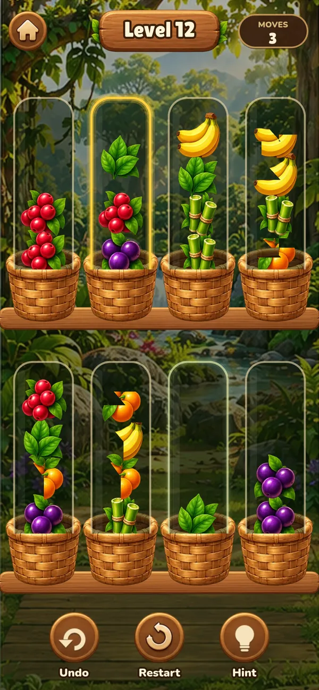
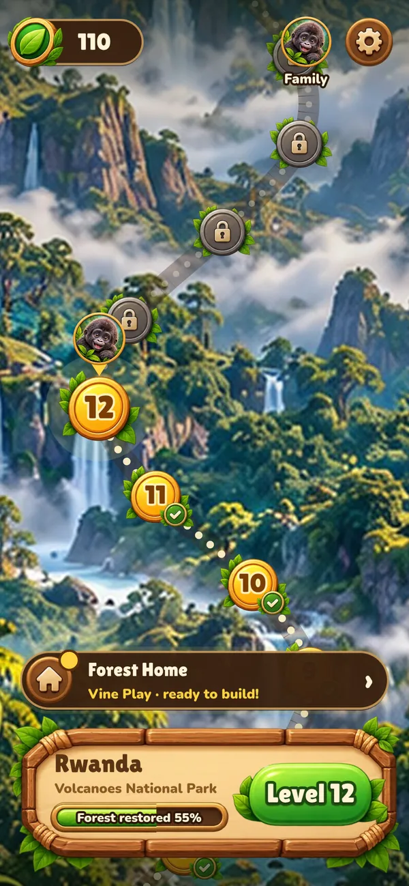
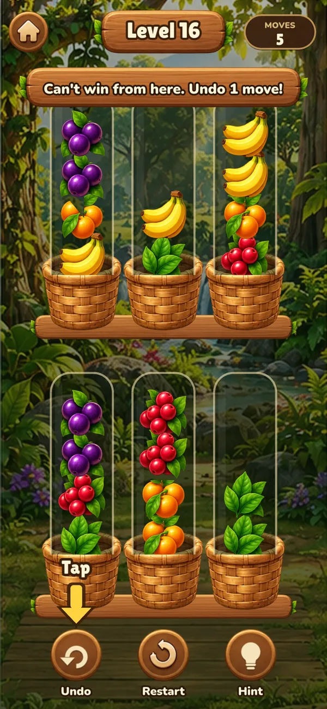
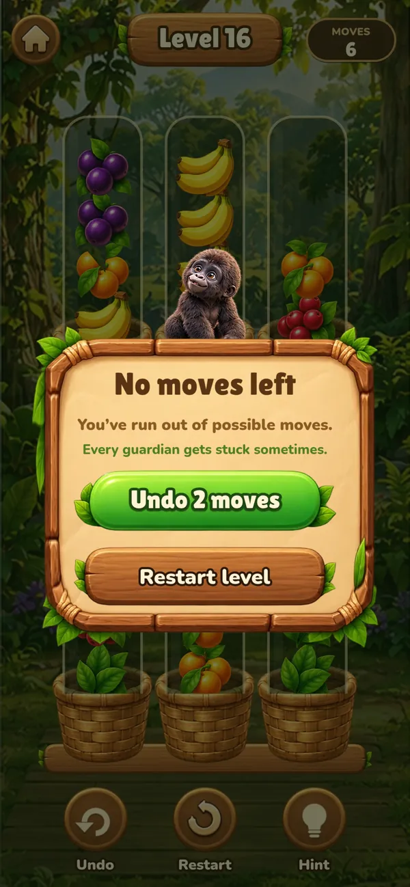
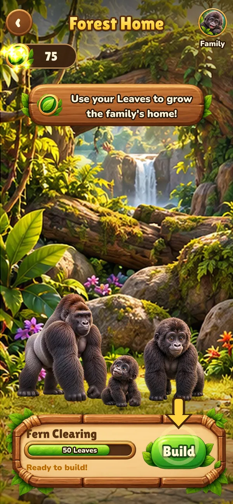
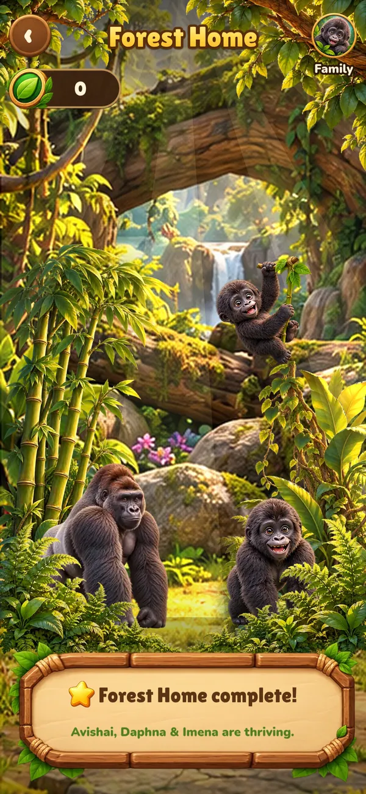
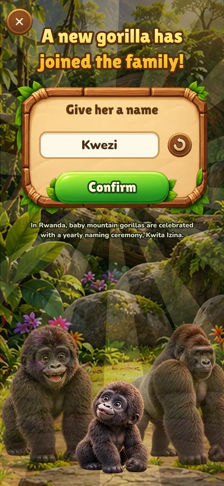
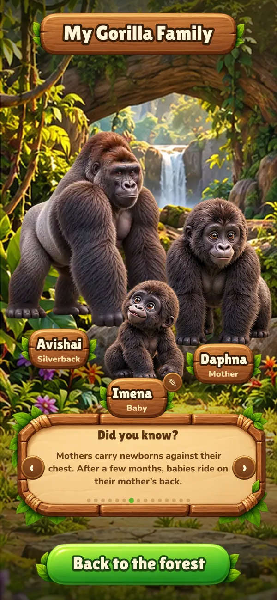

01
The idea came from a trip to Rwanda.
I was traveling in Rwanda when it started: the mountain gorillas, and the conservation work built around them. The question I came home with was a product one. Could that interest live in something people open for five minutes, rather than something they read once?
So the game is a cozy sorting puzzle, the thing you actually do, and a forest and a gorilla family are the reason to keep doing it.
What it costs: no borrowed credibility. The game says it is inspired by Rwanda's mountain gorillas and stops there: no partnership or donation claims, and nothing suggesting that playing restores real habitat.
02
Sort fruit. Restore the valley. Grow the family's home.
Each level is a sort: fruit, leaves and bamboo into woven baskets, one group at a time. Clearing it restores more of the Volcanoes National Park map and earns Leaves. At level 3 the first stretch of forest heals, a baby gorilla joins the family, and you name her.
Leaves have exactly one use: five fixed improvements to the family's Forest Home, each a visible change to the same glade. Restoration counts levels completed, never the Leaf balance, so spending can never make Rwanda look less restored.
What it costs: no shop, no boosters, no energy, no daily rewards. Fewer retention levers, on purpose, for one loop a player can read at a glance.


03
A family playtest showed me the levels weren't fair.
Some levels hinged on one exact sequence. A single early move could make them unwinnable, and nothing told you. It felt like bad luck, which is the one thing a puzzle can't afford to feel like.
Every level is small enough to solve completely, so I checked every reachable position of all 20. It wasn't a couple of bad levels: on the hardest "Plan ahead!" boards, random play lost within three moves 60-72% of the time.
So fairness became three rules the level generator and the test suite enforce: no first move, and no two-move opening, can lose a level; every level after the tutorial has at least two real ways to start; and there is always a shortest route that never forces your hand twice in a row. Broken levels were repaired with the smallest item swaps that passed, so they stayed recognisable.
What it costs: difficulty has to come from planning later in a level, which is much harder to design than a trap in the opening.
04
Stuck is never silent, and Hint never guesses.
Hint shows the first move of a shortest winning line, not a plausible one, so following it always finishes the level. If the board can no longer be won, it says so and points at Undo, counting down to the last position that could be.
Solving every position also turned up 351 where you could still move, but only back and forth, and the game said nothing. Those now raise a No moves left card, and its Undo goes straight back to the last winnable board. Recovery is Undo or Restart: no lives, no ads, no reshuffles.
What it costs: honest help means the game has to know the answer. Hint is audited on all 22,815 reachable positions across the 20 levels.


05
The Forest Home teaches itself, once.
The first time you arrive with enough Leaves, the counter lights up, one line says what Leaves are for, and the tutorial arrow points at Build. Nothing is dimmed or blocked, and your first purchase ends it for good.
It only appears when the first build is affordable. A tutorial never asks for something the player can't do yet. Five improvements later, the same glade is full: ferns, bamboo, a vine for the baby, the understory, the canopy.


06
What it teaches, it gets right.
Tap a gorilla on the family screen and it reacts, with a short fact about it from a carousel of fifteen: family groups, the silverback's role, nose prints as fingerprints. Naming the baby carries one line about Kwita Izina, Rwanda's yearly naming ceremony for baby gorillas.
Only well-established facts, short enough to read between levels, and no statistics I can't stand behind.


07
The decision I'd defend
Making fairness a rule the build enforces, not a feeling I tune toward. A puzzle can be hard. It can't be a trap you only discover three moves later.
Writing that down as three testable rules is what let the late levels get harder without getting cheaper. The generator now refuses to ship a level that breaks them.
Live in the browser, installable to a home screen, and playable offline once it has loaded. Twenty levels and one region: a complete vertical slice, not an app-store release.
Play it on your phone.
It runs in the browser. Add it to your home screen and it keeps working offline.